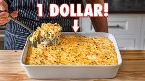

Mac and Cheese
Home Page

Mac and Cheese that is super cheap to make and can be altered in many different ways!
Makes 6-8 servings and takes about 45 minutes to cook!
Ingredients:
- 1 lb Macaroni
- 1/2 cup unsalted butter
- 1/2 cup all-purpose flour
- 2 1/2 cups whole milk
- 1 cup heavy cream
- 2 1/2 cups grated sharp chedder
- 2 1/2 cups grated Monterey Jack
- salt and pepper
- small pinch of nutmeg
Steps:
- Bring a pot of salted water to a boil.
- And macaroni and boil for up to 1 minute unuder the packaged intructions(8-9 minutes).
- In a large bowl, mix together the grated cheeses.
- In a large pot, add unsalted butter and heat over medium heat until melted. Once melted, whisk in all-purpose flour and cook for 1 minute while stirring often. Gradually stream in whole milk and heavy cream while whisking.
- Once thickened, add in the mixed grated cheeses(1.5 cups at a time) and whisk until melted and combined. Season to taste with salt and an optional pinch of grated nutmeg.
- Drain macaroni and pour into the cheese sauce and fold together. Coat thoroughly.
- In a lightly greased 9x13 baking dish, add in half of the cheesy macaroni followed by the remaining grated cheese and the other half of the macaroni.
- Optionally toss the remaining grated cheese with chopped thyme and add to the top layer of the macaroni.
- Bake at 350F for 20-25 minutes. Blast it under the broiler until just browned on top.